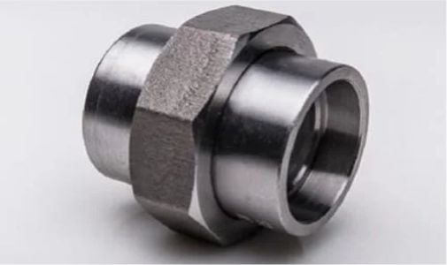

Industrial flanges / Mumbai, India

Valtron Forge & Fittings is a leading manufacturer, supplier, stockist, and exporter of premium quality Forged Unions in India. We offer a comprehensive range designed to meet international standards and the demanding requirements of industrial piping systems.
Our forged unions provide quick make-and-break connections in high-pressure small-bore piping, letting equipment be removed without cutting or rotating the line.
A Forged Union is a three-piece fitting – two ends joined by a union nut – manufactured to ASME B16.11 / MSS SP-83 with ground metal-to-metal seats. Available with socket weld or threaded ends in classes 3000# and 6000#.

Three-piece design with ground metal-to-metal seat
Connect / disconnect without rotating or cutting pipe
Socket Weld (SW) and Threaded (SCRD) end options
Pressure classes 3000# and 6000# as per MSS SP-83
Forged construction for superior strength and durability
Available in all grades of stainless, carbon, alloy and nickel alloys
Sizes from 1/8” NB to 4” NB
| Parameter | Specification |
|---|---|
| Product | Forged Unions |
| Manufacturing Standards | ASME B16.11, MSS SP-79, MSS SP-83, MSS SP-95, MSS SP-97, BS 3799 |
| Material Standards | ASTM A105, ASTM A182, ASTM A350, ASTM B564 |
| International Codes | ASME, ASTM International |
| Pressure Classes | 2000#, 3000#, 6000#, 9000# |
| Size Range | 1/8” NB to 4” NB |
| End Connections | Socket Weld (SW) & Threaded (SCRD) |
| Inspection & Testing | PMI Testing, Hardness Test, Impact Test, Hydrostatic Test, Dimensional Inspection, Visual Inspection |
| Certification | Mill Test Certificate (EN 10204 3.1 / 3.2), Third-Party Inspection (TPI) |
Unions requirements depend on the end connection and adjoining pipe. The reference below supplements the existing product data; offered scope is confirmed against the complete specification.
| Parameter / designation | Technical information | Selection requirement |
|---|---|---|
| Fitting geometry | Mating end type, seat arrangement and complete union assembly dimensions. | Supply a drawing for non-standard or replacement interfaces. |
| End connection | Identify socket-weld or threaded ends explicitly. | Specify socket/bore details or thread form; NPT and BSP are not interchangeable. |
| Dimension standard | ASME B16.11 where applicable; unions and other special forms may need a different standard. | Confirm the fitting type and edition rather than applying one standard to every form. |
| Material specification | ASTM A105 or A182 are examples for different forging materials. | State the actual grade, product form, heat treatment and supplementary requirements. |
| Pressure design | Fitting class, connection form, material and design temperature. | Do not equate fitting class, pipe schedule and flange class. |
Compare Unions with the related forms or references below. A related product is not necessarily a permissible substitute.
| Related product / reference | Distinction | Check before selection |
|---|---|---|
| Elbows | Compare the elbows geometry and end connection with the piping layout. | Confirm sizes, wall/class and the mating pipe specification. |
| Tees | Compare the tees geometry and end connection with the piping layout. | Confirm sizes, wall/class and the mating pipe specification. |
| Couplings | Compare the couplings geometry and end connection with the piping layout. | Confirm sizes, wall/class and the mating pipe specification. |
| Caps & Plugs | Compare the caps & plugs geometry and end connection with the piping layout. | Confirm sizes, wall/class and the mating pipe specification. |
| Reducing Inserts | Compare the reducing inserts geometry and end connection with the piping layout. | Confirm sizes, wall/class and the mating pipe specification. |
Define acceptance requirements for Unions in the purchase order. Required examinations and documents depend on the material, design and project specification.
| Review stage | Information to confirm | Order requirement |
|---|---|---|
| Material identity and traceability | Specification, grade, heat/lot identification and the required material certificate. | Agree documentation and marking before manufacture; visual appearance cannot verify alloy identity. |
| Dimensional verification | Critical dimensions from the selected standard or controlled drawing. | Identify inspection points, tolerances, units and drawing revision. |
| Surface and end condition | End preparation, threads/sockets where applicable and accessible surfaces. | State finish and visual acceptance criteria; agree protection of machined surfaces. |
| Supplementary examinations | Any specified PMI, NDE, hardness, impact, corrosion or other tests. | Define the method, sampling and acceptance criteria; tests are not automatically included. |
| Assembly compatibility | Adjoining components, weld or mechanical interface and project service conditions. | Design approval and correct assembly remain separate from a dimensional inspection report. |
| Packing and order release | Quantity, identification, surface protection, documents and delivery destination. | Agree preservation, packaging and release requirements with the order. |